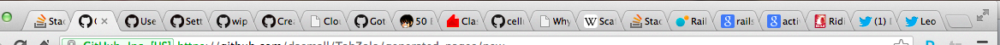
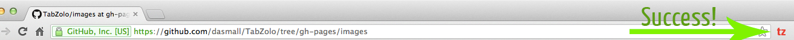

What is it?
TabZolo is a Google Chrome extension designed to help you focus on actually getting things done while you're online.
Video Walkthrough
How does it work?
TabZolo aims to be as simple to use as possible. Once installed, just click the TabZolo icon and it will hide all your inactive tabs and windows leaving you with your current tab. TabZolo will prevent you from opening any other tabs or windows while enabled allowing you to focus on getting your current task done.
Go from:

To

What if I want my tabs back?
Simply disable TabZolo by clicking the icon and all your original tabs and windows will be restored.
Why would you make such an EVIL extension?
David's main motivation was to gain focus on one thing only and felt it would be nice to mess around with Chrome extensions to solve that pet peeve. Leo was intrigued with the project and decided to jump onto the project to improve his skills.